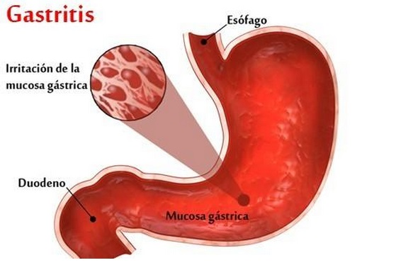

Gastritis
Tabla de Contenidos
Descripción
La gastritis es un término general para un grupo de afecciones con una cosa en común: la inflamación del revestimiento del estómago (conocido como mucosa gástrica). Esta inflamación es una respuesta del cuerpo a algún tipo de irritación o daño.
Cuando el revestimiento del estómago se inflama, se vuelve rojo e hinchado y puede ser doloroso. Esta inflamación puede ocurrir de forma repentina (gastritis aguda) o manifestarse lentamente con el tiempo (gastritis crónica). En algunos casos, la gastritis puede desgastar el revestimiento del estómago, causando erosiones o incluso úlceras.
Causas Principales
La gastritis ocurre cuando la barrera mucosa que protege el estómago del ácido gástrico se debilita o daña. Varias condiciones y factores de estilo de vida pueden causar esto:
- Infección por Helicobacter pylori
- Esta es la causa más común de gastritis crónica en todo el mundo. Es una bacteria que vive en el revestimiento mucoso del estómago. Sin tratamiento, la infección puede durar toda la vida y provocar inflamación crónica, úlceras y, en algunos casos, cáncer de estómago.
- Uso de AINEs
- El uso frecuente o prolongado de antiinflamatorios no esteroideos, como el ibuprofeno, el naproxeno o la aspirina, puede dañar la mucosa gástrica. Estos medicamentos reducen una sustancia que ayuda a proteger el estómago del ácido.
- Consumo excesivo de alcohol
- El alcohol puede irritar y erosionar el revestimiento del estómago, haciéndolo más vulnerable al ácido gástrico. Esto suele causar gastritis aguda.
- Estrés fisiológico severo
- No se trata del estrés diario, sino de un estrés físico grave debido a una cirugía mayor, una lesión traumática, quemaduras graves o una enfermedad crítica. Esto puede causar "gastritis por estrés".
- Gastritis autoinmune
- En este tipo menos común, el propio sistema inmunitario del cuerpo ataca por error las células sanas del revestimiento del estómago. Esto es más común en personas con otras enfermedades autoinmunes.
Tipos de gastritis
La gastritis se clasifica generalmente según su duración (aguda o crónica) y la causa subyacente.
| Tipo | Causa principial | Tratamiento habitual |
|---|---|---|
| Gastritis Aguda | Consumo de AINEs, alcohol, estrés severo | Antiácidos, suspensión del irritante, dieta blanda |
| Gastritis Crónica por H. pylori | Infección por Helicobacter pylori | Erradicación con antibióticos, inhibidores de ácido |
| Gastritis Erosiva | Uso prolongado de AINEs, alcohol, estrés | Suspensión de AINEs, protectores gástricos (ej. sucralfato) |
| Gastritis Autoinmune | Reacción del sistema inmunitario | Suplementos de vitamina B12 (si hay anemia perniciosa) |
Síntomas
Los síntomas de la gastritis pueden variar mucho entre individuos. De hecho, algunas personas con gastritis no presentan ningún síntoma. Cuando los síntomas ocurren, los más comunes incluyen:
- Dolor o ardor (indigestión) en la parte superior del abdomen, que puede empeorar o mejorar al comer.
- Náuseas y vómitos (que pueden ser claros, verdes/amarillos o, en casos graves, con sangre).
- Sensación de plenitud o hinchazón en la parte superior del abdomen después de comer.
- Pérdida de apetito.
- Heces oscuras o alquitranadas (esto indica sangrado y es una emergencia).
Factores de Riesgo
Ciertos factores pueden aumentar el riesgo de desarrollar gastritis:
- Infección por H. pylori.
- Uso regular de AINEs o corticosteroides.
- Edad avanzada, ya que el revestimiento del estómago tiende a volverse más delgado.
- Consumo habitual y excesivo de alcohol.
- Tabaquismo.
- Niveles altos de estrés (físico o emocional).
- Padecer otras enfermedades, como trastornos autoinmunes, VIH/SIDA o enfermedad de Crohn.
Pruebas y diagnóstico
Para diagnosticar la gastritis, el médico revisará el historial clínico y los síntomas. Las pruebas pueden incluir:
- Endoscopia digestiva alta (Gastroscopia): Es la prueba más precisa. Se introduce un tubo delgado con una cámara (endoscopio) por la garganta para observar directamente el revestimiento del estómago y buscar signos de inflamación, erosiones o úlceras.
- Biopsia gástrica: Durante la endoscopia, el médico puede tomar pequeñas muestras de tejido del revestimiento del estómago. Estas muestras se analizan en un laboratorio para confirmar la inflamación y, fundamentalmente, para detectar la presencia de H. pylori o cambios celulares (como en la gastritis autoinmune).
- Pruebas para Helicobacter pylori: Además de la biopsia, esta bacteria se puede detectar con métodos no invasivos, como una prueba de aliento con urea, un análisis de sangre (para anticuerpos) o un análisis de heces (antígenos).
- Análisis de sangre: Pueden usarse para buscar signos de anemia (recuento bajo de glóbulos rojos), que puede ser causada por un sangrado crónico debido a la gastritis.
Tratamiento
El tratamiento de la gastritis depende de su causa y gravedad. El objetivo es reducir la inflamación, aliviar los síntomas y tratar la causa subyacente para prevenir complicaciones.
Para neutralizar o reducir el ácido estomacal:
- Antiácidos: Medicamentos de venta libre (como Almax, Tums, Maloox) que neutralizan el ácido estomacal y proporcionan alivio rápido pero temporal.
- Bloqueadores H2: (Como la famotidina) Reducen la cantidad de ácido que produce el estómago.
- Inhibidores de la bomba de protones (IBP): (Como el omeprazol, pantoprazol, lansoprazol) Son los más potentes para reducir la producción de ácido, permitiendo que la mucosa inflamada se cure.
Para tratar la causa subyacente:
- Antibióticos (si hay infección por H. pylori): Erradicar la bacteria es crucial. Generalmente, se usa una combinación de dos o tres antibióticos junto con un IBP durante 10 a 14 días.
- Suspensión de irritantes: Si la causa es el uso de AINEs o alcohol, el médico indicará suspender o cambiar estos medicamentos y evitar el alcohol.
Complicaciones
Si no se trata, la gastritis crónica puede llevar a problemas más serios:
- Úlceras pépticas: Llagas abiertas en el revestimiento del estómago o el duodeno.
- Sangrado gástrico: La gastritis erosiva puede causar sangrado, que puede ser lento y crónico (llevando a la anemia) o agudo y severo (una emergencia médica).
- Gastritis atrófica: Una forma crónica que destruye las glándulas productoras de ácido y puede aumentar el riesgo de cáncer.
- Anemia perniciosa: La gastritis autoinmune puede dañar las células que producen el "factor intrínseco", necesario para absorber la vitamina B12, lo que lleva a la anemia.
- Cáncer de estómago: La gastritis crónica, especialmente la causada por H. pylori y la autoinmune, aumenta el riesgo de desarrollar cáncer gástrico a largo plazo.
Prevención y Dieta
Los cambios en el estilo de vida son fundamentales tanto para tratar la gastritis como para prevenirla:
- Modificaciones en la dieta: Evitar alimentos y bebidas que irriten el estómago. Los desencadenantes comunes incluyen alimentos picantes, fritos, grasos, ácidos (cítricos, tomate), café y bebidas carbonatadas.
- Evitar el alcohol y el tabaco: Ambos son irritantes potentes de la mucosa gástrica.
- Comer porciones más pequeñas: Comer comidas más pequeñas y frecuentes puede ayudar a reducir la carga de ácido en el estómago.
- Manejar el estrés: Aprender técnicas de relajación, meditación o hacer ejercicio puede ayudar a manejar el estrés, que puede empeorar los síntomas.
- Usar AINEs con precaución: Si debe tomar AINEs, hágalo con comida y por el período más corto posible. Consulte a su médico si necesita tomarlos a largo plazo; puede necesitar un protector gástrico (IBP).